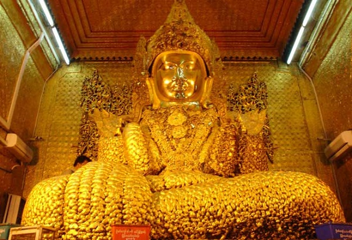
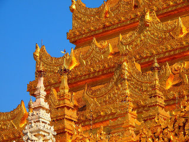
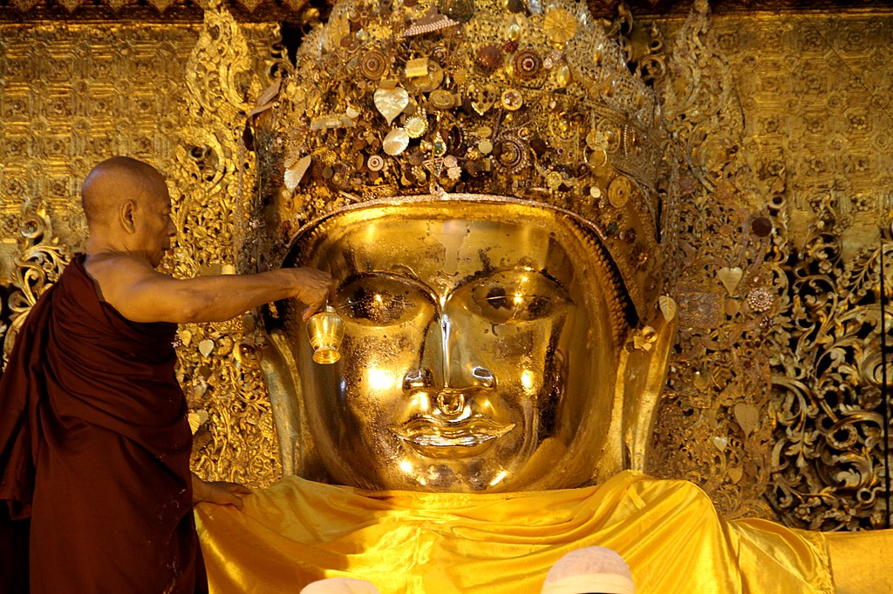
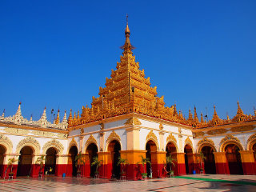
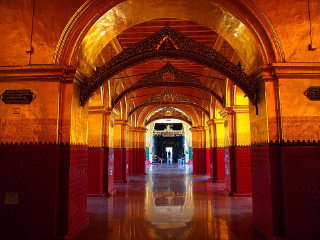
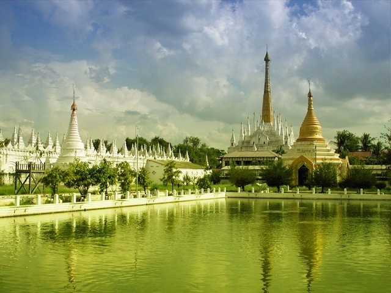

Mahamuni Pagoda

The Mahamuni Buddha
Temple
called the Mahamuni Pagoda) is a Buddhisttemple and major pilgrimage site, located southwest of Mandalay, Myanmar (Burma)(Myanmar). The Mahamuni Buddha image (literal meaning: The Great Sage) is deified in this temple, and originally came from Arakan. It is highly venerated in Burma and central to many people's lives, as it is seen as an expression of representing the Buddha's life. Ancient tradition refers to only five likenesses of the Buddha, made during his lifetime; two were in India, two in paradise, and the fifth is the Mahamuni Buddha image in Myanmar. According to the legend, the Buddha visited the Dhanyawadi city of Arakan in 554 BC. King Sanda Thuriyarequested that an image was cast of him. After casting the Great Image, the Buddha breathed upon it, and thereafter the image became the exact likeness of the Mahamuni. According to legend, the Gautama Buddhavisited Dhanyawadi, the capital city of Arakan during his travels on a Proselytization mission to spread Buddhism. During the 26th anniversary of the King at the time, a devout Buddhist, the Buddha accompanied by Shin Ananda and 500 disciples landed at Salagiri mountain peak near Khaukrah town.

The King of Arakan, along with his Chief Queen Sandra Mala (with her retinue of 1,600 ladies in waiting), and an entourage of ministers, generals and officials, paid homage to the Buddha. They were deeply moved by his teachings and upon his departure to Thawuthi (Sravasti), the King insisted that he leave his image for people to worship. For this purpose, the Buddha then sat under a Bodhi tree for a week of meditation. During this time Sakka (in Pali, the ruler of the Trayastri?sa Heaven in Buddhist cosmology, supported by his assistant Vissakamma, moulded a lifelike image of the Buddha using ornaments donated by the king and his people. It is also said that Sakka and Vissakamma (or Vishvakarman) created a separate pavilion for the Buddha to live and enjoy during these seven days. After looking at his own lifelike image, believed at the time to have been his only true-likeness, Buddha was pleased and "imbued the image with his spiritual essence", or "enlivened and consecrated" the image, naming it "Candasara". He also stated that the image would last for five thousand years as his representative.
Historian Juliane Schober has very succinctly explained this legend and the cult worship that has evolved around the "living" double image of Mahamuni Buddha:
The rich and complex mythology associated with this image includes episodes that parallel other stories about the Buddha...The rituals and myths of Mahamuni thus accomplish two aims simultaneously: they place local contexts and actors within a universal Buddhist cosmology, and they locate a continuing biography of the Buddha in the Buddhist politics of Arakan and Upper Burma. Theravada politics characteristically extended the biographical mode of recreating the Buddha's presence and associated with it the power of kings and other patrons of this image. The veneration of this Buddha image is thus informed by local conceptions of religious patronage in sociopolitical domains.

Another legend narrated in the Arakanese chronicle relates to the nine phenomena that occurred when the image was consecrated in the temple and continued to occur after the Buddha had departed. These nine phenomena were: holy water used for washing the image would not overflow the collecting vessels; the water from the tank that was used for washing the Buddha's head would retain its quality throughout the year; six coloured rays appeared when the devotees worshipped the image in the evenings; the rays faded in the presence of non-believers; the space in the temple would automatically accommodate any number of devotees; the leaves of trees would tilt in the direction of the Buddha image; birds would not fly over the temple; and the stone guardians at the entrance would sense the presence of evil doers and prevent them from entering the temple.
The Mahamnuni image and its precincts suffered damage from fires in 1879 and 1884.[26] In the fire that broke out during the reign of King Thibaw, the seven-tiered spire on the brick temple, devotional halls, causeways and others were burnt down, although the Great Image itself was saved. Gold recovered after the fire was made into a robe that currently adorns the image. In 1887, Minister Kinwun Mingyi U Kaung took charge of the site and in 1896 constructed the present temple around the original shrine built by King Bodawpaya.

In 1996, the military rulers in Burma undertook renovation work on the Mahamuni Pagoda. During this period, the Mahamuni Buddha image was damaged in 1997 when a hole appeared in the belly of the Great Image. It was believed that thieves had drilled the hole in an attempt to steal jewels believed to be secreted within the image. It was reported that a military officer had requested to open the temple in the night, resulting in a meeting of all the senior monks from major monasteries in the area to discuss the matter. Whilst the meeting was in progress, attention was diverted to a purported rape incident committed by a Muslim man on a Buddhist girl. A major riot broke out but it turned out afterward that the Buddhist girl had not been raped at all. It was a coverup to divert attention away from the Buddha so it could be repaired. However, the mystery remains as to whether any jewellery did exist and was actually removed from the Great Image at all.
The Mahamuni Temple or Pagoda is a complex of structures located along a road from Mandalay leading to the southwest. It was originally located on A brick paved road which was constructed from the Royal Palace of King Bodawpaya to the eastern gate of the temple, although only remnants of this road can still be seen. A major teaching monastery of some 400 monks of the Thudhamma Nikaya (order), is one among the many monasteries which are adjacent to the Pagoda. The temple has a central shrine and is framed by an extensive grass lawn. The arcades leading to the main shrine have many kiosks, selling religious paraphernalia such as incense, candles, rosaries, flowers, robes, sandals etc., and various restaurants and tea shops. The sanctum sanctorum, where the large.


The Mahamuni Buddha image is housed in a small chamber, seated on a throne in a divine posture known as the Bhumisparsa Mudra. This posture or mudra symbolises Buddha's vanquishing of Mara). The legs are crossed with feet turned inwards, and the right hand touches the ground ritualistically, as a witness of his past deeds. The image is cast in bronze and weighs 6.5 tonnes and is erected on a 1.84 metres (6.0 ft) high pedestal and reaches a height of 3.82 metres (12.5 ft). Its shoulders measure 1.84 metres (6.0 ft) and its waist measures 2.9 metres (9.5 ft). It is draped in royal costumes with "Brahmanic cords (salwe) and regalia crossing his chest". The image is crowned, bejewelled
with diamonds, rubiesand sapphires. The left hand appears imprecise, unusually large, and is seen resting in the lap with an upturned palm.
Gold leaves are regularly applied to the face of the Mahamuni Buddha by male devotees. Consequent to the frequent application of gold leaves, the coating of gold (thickness 15 centimetres (5.9 in)) has given a shapeless contour to the Mahamuni image. However, it is also noted that the right hand, crown and other iconographic characteristics of royalty are free of gold leaf covering, which gives an impression that these were later additions to the original image of the Mahamuni.]In 1884, when the pagoda was burnt down, 91 kilograms (201 lb) of gold was recovered from the site, which represents the continued historical veneration and perpetuation of the cult of Mahamuni.
A large number of 'inscription stones' collected by King Bodawpaya are seen in a long gallery in the southeastern corner of the temple courtyard. These inscriptions, some of which are made from gilded marble and sandstone, have been collected from many regions of the country. There is also a large water tank in the southeast direction of the temple where fish and turtles are fed with rice cakes by the large number of pilgrims who visit the temple every day. Adjacent to the Buddha temple is the Mahamuni Museum, which contains displays of Buddhism throughout Asia.
 Facebook:
Facebook:  Email:
Email:  Browser:
Browser:  Phone:
Phone:  Address:
Address: